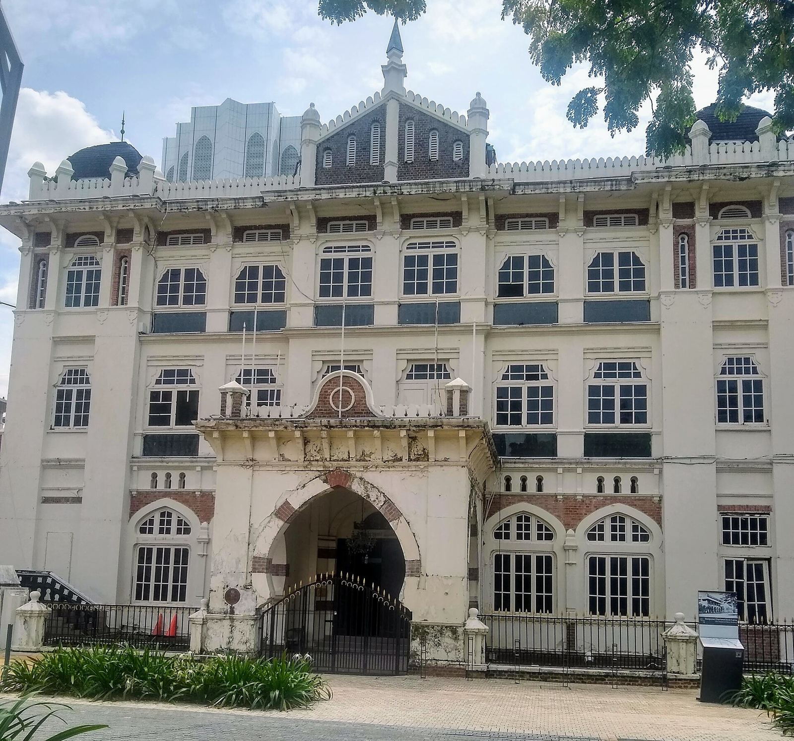
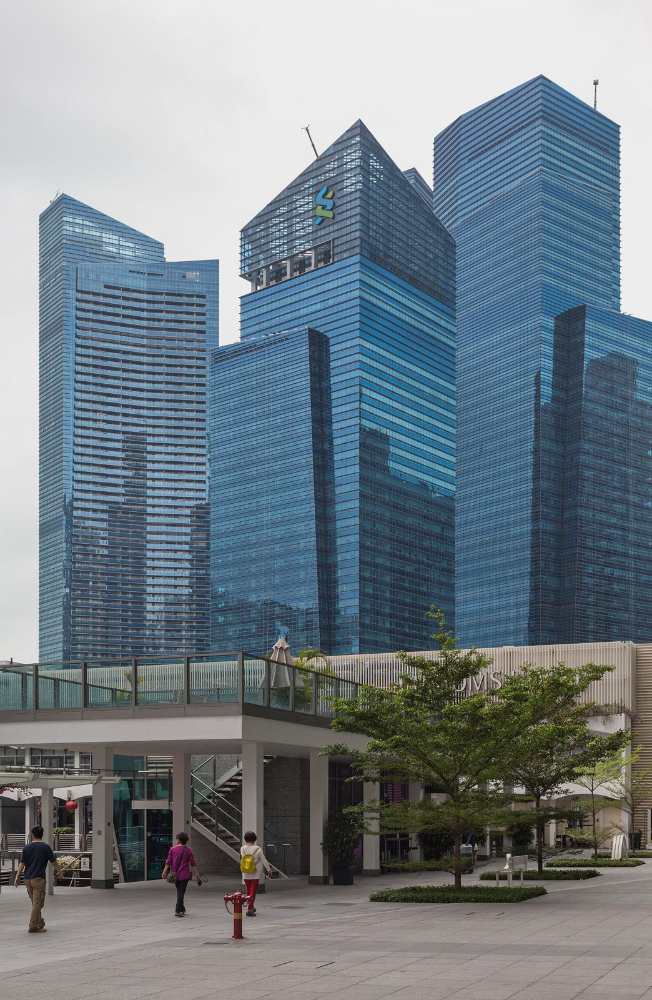
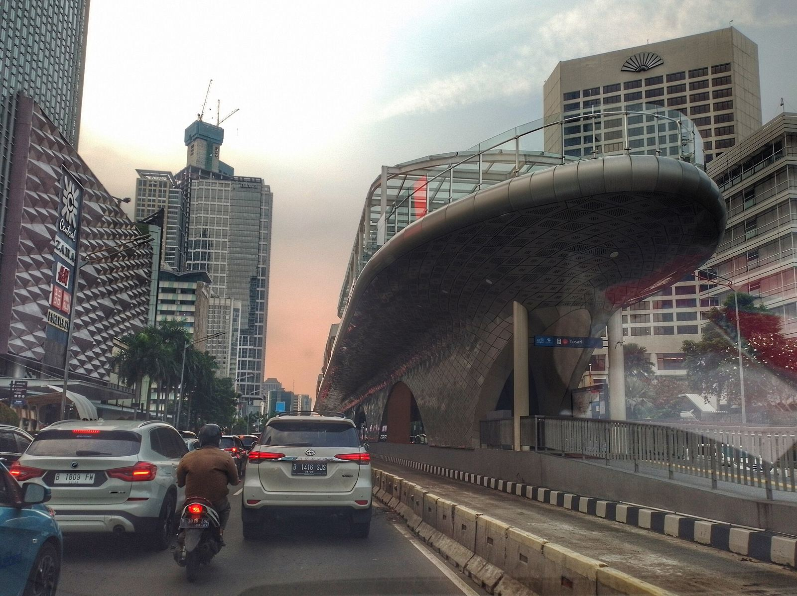

Three banks hold most of it
62%
Maybank, CIMB and Public Bank hold US$589.7 billion of the US$950.5 billion held by all twelve Malaysian banks in the ranking. Add RHB and Hong Leong and five banks hold 80%.
TAB Global 1000, FY2025
Size is one rank of six
Each line is a bank. It runs through the bank’s rank among the twelve on each of TAB’s six measures, first at the top. Hong Leong is fifth by size, first on return on assets and on cost, and last on capital. Pick a bank to follow its line.
Six measures,
twelve orders
Each tab sorts the twelve by one measure. The three banks at the far end of the order are in orange.
Get the data (JSON)What the size chart hides
Size and profit are not the same order.
Public Bank holds 14.6% of the twelve banks’ assets and makes 18.5% of their profit. Hong Leong holds 8.9% and makes 11.8%. AFFIN holds 3.2% and makes 1.3%. Black bars grew, orange bars shrank.
The numbers
| Bank | Assets | Profit |
|---|---|---|
| Maybank | 27.3% | 27.0% |
| CIMB Group | 20.2% | 20.0% |
| Public Bank | 14.6% | 18.5% |
| RHB Bank | 9.3% | 8.4% |
| Hong Leong Financial Group | 8.9% | 11.8% |
| AMMB Holdings | 5.4% | 5.4% |
| Bank Rakyat | 3.4% | 3.1% |
| AFFIN Bank | 3.2% | 1.3% |
| Bank Islam | 2.7% | 1.4% |
| Alliance Bank | 2.4% | 2.1% |
| MBSB Bank | 1.5% | 0.4% |
| Bank Muamalat | 1.2% | 0.6% |
Five banks earn under 7.5% on equity.
Each block’s footprint is its assets and its height is its return on equity. Public Bank is highest at 12.3%. Bank Islam, Bank Muamalat, Bank Rakyat, AFFIN and MBSB sit under 7.5%, and four of the five are Islamic banks. Move the line and see who falls under it.
The numbers
| Bank | Return on equity |
|---|---|
| Public Bank | 12.3% |
| Maybank | 11.2% |
| CIMB Group | 11.2% |
| Hong Leong Financial Group | 10.7% |
| RHB Bank | 10.2% |
| AMMB Holdings | 10.0% |
| Alliance Bank | 9.9% |
| Bank Islam | 7.1% |
| Bank Muamalat | 6.2% |
| Bank Rakyat | 4.9% |
| AFFIN Bank | 4.5% |
| MBSB Bank | 2.2% |
Hong Leong spends 30 sen to earn a ringgit.
Each ring is a ringgit of income, and the arc is what the bank spends to earn it. Hong Leong spends 30.0 sen and Public Bank 34.8. AFFIN spends 68.2, Bank Islam 66.0 and Bank Muamalat 63.9.
The numbers
| Bank | Cost to income |
|---|---|
| Hong Leong Financial Group | 30.0% |
| Public Bank | 34.8% |
| AMMB Holdings | 44.2% |
| Maybank | 45.7% |
| CIMB Group | 46.8% |
| RHB Bank | 47.7% |
| Alliance Bank | 47.9% |
| Bank Rakyat | 51.6% |
| MBSB Bank | 59.3% |
| Bank Muamalat | 63.9% |
| Bank Islam | 66.0% |
| AFFIN Bank | 68.2% |
DBS alone earns 89% of what all twelve earn.
Singapore’s DBS holds US$697.8 billion, 73% of the assets of all twelve Malaysian banks together. Its US$8.37 billion profit is 89% of their US$9.37 billion. Singapore’s three local banks hold 1.75 times all twelve.
The numbers
| Assets | Profit | |
|---|---|---|
| Twelve Malaysian banks | US$950.5b | US$9.37b |
| DBS | US$697.8b | US$8.37b |
| DBS as a share | 73% | 89% |
Indonesia’s banks earn more on every dollar.
Bank Central Asia earns 3.8% on its assets, BRI 2.7% and Mandiri 2.4%. Malaysia’s best is Hong Leong at 1.4%. Thailand’s big four sit between 1.0% and 1.4%, and Singapore’s three between 0.9% and 1.3%.
The numbers
| Country | Return on assets |
|---|---|
| Malaysia | Maybank 1.0, CIMB 1.0, Public Bank 1.3, RHB 1.0, Hong Leong 1.4 |
| Singapore | DBS 1.3, OCBC 1.2, UOB 0.9 |
| Thailand | Bangkok Bank 1.0, Kasikorn 1.3, Krung Thai 1.4, SCB 1.4 |
| Indonesia | Mandiri 2.4, BRI 2.7, BCA 3.8, BNI 1.7 |
Per dollar held
Return on assets is what a bank earns on each dollar it holds. Malaysia’s best bank, Hong Leong Financial Group, earns 1.4 cents. Bank Central Asia in Jakarta earns 3.8, and it is smaller than Maybank, CIMB or Public Bank.
1.4%
Hong Leong, Malaysia’s best
3.8%
Bank Central Asia, Jakarta
The twelve
with world rank
116
Maybank
150
CIMB Group

188
Public Bank
259
RHB Bank
272
Hong Leong Financial
389
AMMB Holdings

523
Bank Rakyat
536
AFFIN Bank
585
Bank Islam
628
Alliance Bank

784
MBSB Bank
844
Bank Muamalat
Method and caveats
Where do the numbers come from?
TAB Insights’ World’s 1000 Largest Banks 2026, read on 29 October 2026. It ranks banks by total assets and gives net profit, return on equity, return on assets, cost to income and capital adequacy for each.
Which year is this?
FY2025. Financial years ending up to March 2026 count if the results were published by 31 August 2026.
Could a Malaysian bank be missing?
Only a small one. The free table shows ranks 1 to 914. The bank at 898 holds US$9.8 billion, so a Malaysian bank smaller than that, ranked 915 to 1,000, would not appear here.
Why US dollars?
TAB converts every bank to US dollars. A move in the ringgit changes these figures without the banks changing at all.
Are these all banks?
Hong Leong Financial Group and AMMB Holdings are holding groups, so their figures cover more than the bank. Maybank Singapore (rank 511) and Maybank Indonesia (rank 836) are counted under their own countries, as TAB does.
What did we work out?
Shares are each bank’s assets or profit over the twelve banks’ total, rounded to one decimal. The ratios are TAB’s own and we did not recalculate them. Every figure on this page was checked against the source table.
All twelve rows
| Rank | Bank | Assets, US$m | Net profit, US$m | ROE % | ROA % | Cost to income % | Capital % |
|---|---|---|---|---|---|---|---|
| 116 | Maybank | 259,510 | 2,531 | 11.2 | 1.0 | 45.7 | 20.0 |
| 150 | CIMB Group | 191,809 | 1,876 | 11.2 | 1.0 | 46.8 | 18.0 |
| 188 | Public Bank | 138,341 | 1,731 | 12.3 | 1.3 | 34.8 | 17.2 |
| 259 | RHB Bank | 88,205 | 787 | 10.2 | 1.0 | 47.7 | 18.5 |
| 272 | Hong Leong Financial Group | 84,322 | 1,106 | 10.7 | 1.4 | 30.0 | 14.9 |
| 389 | AMMB Holdings | 51,299 | 505 | 10.0 | 1.0 | 44.2 | 17.9 |
| 523 | Bank Rakyat Malaysia | 32,276 | 288 | 4.9 | 1.0 | 51.6 | 25.6 |
| 536 | AFFIN Bank | 30,561 | 126 | 4.5 | 0.5 | 68.2 | 17.3 |
| 585 | Bank Islam Malaysia | 25,646 | 130 | 7.1 | 0.6 | 66.0 | 18.3 |
| 628 | Alliance Bank Malaysia | 22,760 | 199 | 9.9 | 0.9 | 47.9 | 17.9 |
| 784 | MBSB Bank | 14,569 | 41 | 2.2 | 0.3 | 59.3 | 19.1 |
| 844 | Bank Muamalat Malaysia | 11,248 | 52 | 6.2 | 0.5 | 63.9 | 18.1 |
| All twelve | 950,546 | 9,372 | |||||